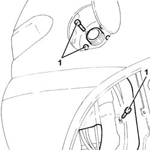
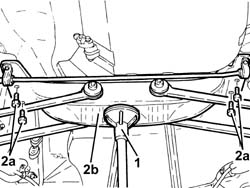
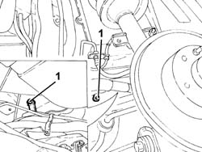
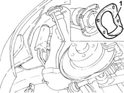

1040A37 LH FIXED TIMING BELT TENSIONER - R R FOR VERSIONS WITH AIR CONDITIONER
- Path
- Procedures > 10 ENGINE UNIT > 1040 FUEL TANK AND PIPES > 1040A FUEL TANK AND COMPONENTS > 1040A37 LH FIXED TIMING BELT TENSIONER - R R FOR VERSIONS WITH AIR CONDITIONER
- Kind
- repair procedure (removal / refitting; the operation number is the code)
- Applies to
- engines: 3.2 V6; all production periods
- Interactive page
- https://sloeber94.github.io/elrnDB-aGt/en/#/125001003
Applies to: engines: 3.2 V6; all production periods
 Removing
Removing
 Refitting
RefittingPosition the vehicle on the ramp
Proceed with removal
Op. 4450B08 RIGHT REAR WHEEL R R
Proceed with removal
1. Undo the bolts fixing the fuel filler pipe to the bodyshell.
Op. 7055B45 RIGHT HAND REAR SUPPLEMENTARY WHEEL ARCH - R+R

Applies to: engines: 3.2 V6; all production periods
Remove the fuel filler pipe cap.
1. Position a hydraulic jack under the rear suspension crossmember.
2. Undo the bolts (2a) and lower the rear suspension crossmember (2b), as necessary, using the hydraulic jack.

Applies to: engines: 3.2 V6; all production periods
1. Remove the two clips protecting the fuel filler pipe.

Applies to: engines: 3.2 V6; all production periods
1. Disengage the fuel filler pipe from the body as required to remove the fuel filler pipe housing seal.

Applies to: engines: 3.2 V6; all production periods
Refitting
RemovingRefit the fuel filler pipe housing seal.
Refit the fuel filler pipe.
Refit the two clips protecting the fuel filler pipe.
Place the rear suspension crossmember back in its housing using the hydraulic jack and fix it tightening the bolts to the recommended torque.
 | Fastening | Component | Ø | Value (daNm) |
|---|---|---|---|---|
- | Bolt | REAR CROSS-BEAM | M10 | (Bodyshell side) 5.8 ÷ 7.2 |
Remove the hydraulic jack from under the rear suspension crossmember.
Tighten the fuel filler pipe retaining bolts.
Replace the fuel filler cap in its housing
Proceed with refitting
Op. 7055B45 RIGHT HAND REAR SUPPLEMENTARY WHEEL ARCH - R+R.
Proceed with refitting
Op. 4450B08 RIGHT REAR WHEEL R R.
Remove the car from the ramps.